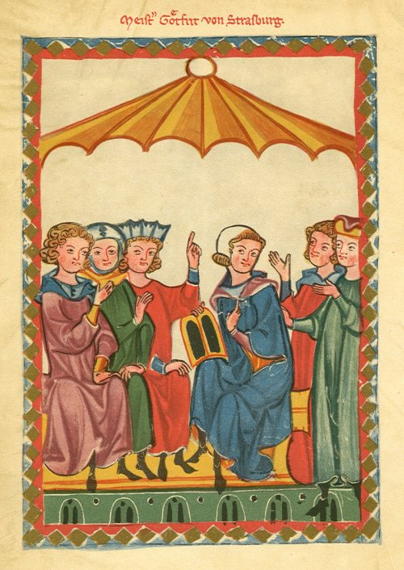

What you need to know first
Gottfried (as we spell him now) first made a written classic of this tale. In archaic outline it begins with the idea of the chieftain, the ruler, the king. His people expect him as the incarnation of social order first to chastise enemies, which requires a champion, and then to perpetuate their nation by producing an heir, for which he needs a woman. Martial loyalty binds champion and chief ; what links chief and woman is sex. There’s no doubt about the headman's brilliance, or his champion’s strength. But the woman, it turns out, controls mysterious forces, indifferent to politics or warfare. She works strong magic on the paragon, destroying the male bond and bringing ruin.
Strands of this primal legend have been sifted from later evidence of many-told tales, in northern Keltic, Irish, Welsh, Britannic, and Germanic colorations. We know, for example, of Drust or Drost (-->Tristan?) as a dynastic name or title among the Picts from as early as the 7th century. Ancient analogues for variations of the names Marke and Isolt, the main personae, have also been found or reconstructed, but likewise only from indirect sources no older than early modern scholarship.
Written versions in several European languages began to appear by the middle of the 12th century, adapted to various local styles, concerns, and talents, but again, we have not a single original from that time, only much later and often only in a few lines or pieces, by means of which, however, scholars have triangulated more or less convincing editions. One French rendering concerns us directly. Composed perhaps about 1170 by a poet named Thomas, perhaps in England, perhaps at a Norman court under the influence of Eleanor of Aquitaine, it was certainly (what a pleasure to know something certainly) the source which Gottfried followed in producing his masterpiece. I’ll let him tell you about that himself. It seems surely coincidence that the main surviving part, the ending, of Thomas’ work, begins only 124 lines before Gottfried’s text breaks off, the only substantial overlap we have, but I like to imagine Gottfried shredding his predecessor’s manuscript as he went, so that along with a few fragments, what we have of that text now is all that was left of Gottfried’s work copy.
And when did Gottfried work? Such is the poverty of hard data from this period that just a single remark in one chapter of a German classic can be nailed on the calendar. Wolfram von Eschenbach, in the 7th book of his Parzifal (stanza 379, verses 18-20), recalls as recent a siege of Erfurt which historians know happened in the summer of 1203. Gottfried scoffed at his great rival, and Wolfram , as we read him, replied in style (neither in fact names the other). Assuming, and allowing them some time for, their supposed feud, dates both their works into the first decade or so of the 13th century. Much of what we hope to know about medieval literature’s relative chronology depends on this chanced bit of frontline reportage.
Now what about Gottfried himself? The only reasonably sure biographical fact we have is that he did compose, but died before he could finish, the work we now call Tristan (or variously spell and combine its characters' names. He left us no title himself). About 1240, the poet Ulrich von Türheim, lamenting Gottfried’s death, supplied an amateurish ending for it, as did also Heinrich von Freiberg at greater length about fifty years later. Neither could very well have done so had a finished version existed then. Of the now-known manuscripts (fragments still turn up occasionally), none goes beyond Gottfried’s line 19,548, or dates from much before 1400. Nothing of his own work comes even close to surviving from his lifetime. Another half-dozen 13th-century poets explicity praised his mastery, while many others did him the honor of imitating his style, more or (usually) less as their skill permitted. His narrative invention and compositional vigor wane distinctly toward the end of the text we have. Was he terminally ill? We can’t know. When launching his work in the Prologue, he seems to say (lines 37-40) it’s high time to get on with it. Certainly the poem’s elegant structure progressively loses its shape and density. Someone, an early posthumous editor or forger, or maybe the enfeebled poet himself, did try to put an altogether different spin on the whole theme toward the later part of the poem, in the Satanic Verses episode.
And so most tangibilia concerning Gottfried come to us only from during or after one of the most revolutionary eras in Western literature, beginning, let’s say, with the extinction of the Hohenstaufen dynasty in the mid-13th century and then fading before the supernova of Martin Luther early in the 16th. How much and what sort of historico-literary correction would scientific honesty require us to apply? I don’t know. I talk about what happened in storytelling across this chasm in Lord and Lady (you can follow a link back to the stories I tell there).
Of course, no one can retell a story without revealing something, often quite a lot, of
him-her-self. I make much of this later on. Suffice it to say for now that succeeding ages knew
Gottfried as not only a master stylist, but as a storyteller. Even a hundred years later, he is
caught in the act on the page devoted to him in the great Liederhandschrift, a splendor
of 14th-century bookmaking that lives now in the library of
Heidelberg University (itself a splendor of learning,
founded in 1386). In this miniature he draws a lively college of listeners, reading to them
from a wax writing tablet, something many of them could not do for themselves.

The superscript on this page grants him the title only of meister, a master of skills, rather than her (modern German Herr,“Sir”), the style most other actors in this virtual pageant earn merely by noble birth, which takes no special skill. Nor does the plate show any heraldric bearings, as do most of the others, meaning that this picture book’s compilers denied Gottfried membership in the second estate. So when we ask who Gottfried von Strassburg was, that’s about all we have to go on.
Except for Tristan. Even absent almost all else, Gottfried's great distinction remains also for us in his supremely accomplished verse, which he wields with incomparable control, wit, and frankness. Read him carefully, and there he arises, in full dimension even before our current minds. Nowhere else in the writings of his age do I know of so immediate a personal presence as here. Meister indeed. (The MHG text is online here. Line numbers in my version correspond to the common scholarly editions).
Translators often see what we do as a sort of parlor trick. It doesn’t really happen. We just hope to make you think so. First I show you a fine palace of strange words. Then I pretend I’m making a simulacrum of it for you, trying not to let you see that it’s really more like sawing a girl in half. Something I don’t do is try to be a dictionary, turning each word into an officially exact equivalent in English (and a pox upon you who insisit I should). First I listen to the story (I have spent a very long time trying to hear this one right). Then I sing you a concoction that sounds and tastes and feels as much like it as possible in a language that you and I share. “It is normally supposed," Salman Rushdie remarked, "that something always gets lost in translation; I cling, obstinately, to the notion that something can also be gained” (Imaginary Homelands [1991], 17). Borges generalized what I suppose Rushdie was talking about: “Un libro es más que una estructura verbal, o que una serie de estructuras verbales; es el diálogo que entabla con su lector y la entonación que impone a su voz y las cambiantes y durables imágenes que deja en su memoria. Ese diálogo es infinito” ("Nota sobre [hacia] Bernard Shaw," Obras Completas 8, 217). I have given the most minute attention to Gottfried's incomparable entonación.
This raises the whole business of the difference between hearing and reading. The literary classics of Gottfried’s time had all been composed primarily with recitation in mind. The alliterative thud of Beowulf and the Hildebrandslied, monuments of declamation, still pounds along under the somewhat milder end-rhymed refrains of the Nibelungenlied, whose grim opera of vengeance relaxed into Chrétien de Troyes' courtly Arthurian couplets, which in turn Hartman von Aue wrote so smoothly into German that Gottfried, with the finest ear of them all, took him as the model for his own song of a legend perhaps first grunted by Pictish bards. (German end rhyme did exist already in the Dark Ages, long before its apotheosis in Gottfried’s day. See my essay "Das Petruslied," Wirkendes Wort 17 [1967], 21-28).
But Gottfried, educated and highly literate, plainly intended posterity to read his work. So why did he bother to put it into such wonderfully musical verse? It certainly causes an almost insurmountable problem for the translator. I'll say what I think, and try to defend that “almost,” first of all with my text, and then in my Apology. Meanwhile, if you find a resonant place in my translation (there are plenty of dumb stretches, alas), try reading that passage aloud, even to a listener or two, if you can corral any, as Gottfried is doing above, at ease under his canopy. That will help more to define what I have aimed for than any amount of technical explaining. Because I don't know how to carve perfect rhymed couplets in English. If I try they come out like Robert Frost reciting Andersen’s Fairy Tales. I started instead with both the shape and the meaning of Gottfried’s sound, and tried to stay as close to them as possible. That’s all there is to it.
A technical note: For the German text, I used every scholarly edition I could lay hands on, but mainly Tristan und Isold, ed. Friedrich Ranke, 5th ed., Berlin 1961. Let's always remember that any modern edition of a medieval work has to be "normalized," as we say, to reconcile all the many variations in manuscripts and fragments we have, trying to approximate as closely as possible what the author intended when he wrote or what his scribe(s) took down as he dictated. That first text comes to us only through a long chain of later (re)copies, often much later and much fragmented and full of mistakes or even purposely altered. It's only fair to credit a translation as another well-meant stage in this process. So with the mistakes I have added I find myself at least in ancient and illustrious company. Gottfried so mixed geography, linguistics, and ethnology with invention that I have left all but the most obvious proper nouns, along with his French and other tongues, as he spelled them. I can't translate what he meant with "Franzois" or "Britanje" by calling them "French" or "Brittany." The scholars I cite in the Apology provide glossaries. Among them, A.T. Hatto saved me much labor in the Prowess episode with his rendition of Tristan's hunting lingo. I copied the the Tristan floor tiles, made about 1270 at Chertsey Abbey, (some with my captions) from Elizabeth S. Eames, Catalogue of Medieval Lead-glazed Earthenware Tiles in the Department of Medieval and Later Antiquities, British Museum (1980, a beautiful and quite rare work), by courtesy of the Trustees of the British Museum. These careful drawings show damaged areas, and occasionally scenes from a different version of the story. I will much appreciate your comments, compliments, or refutations: stavenhagen at stavenhagen.net (I can't afford the spam of putting a clickable link here. Please take the trouble to e-write).